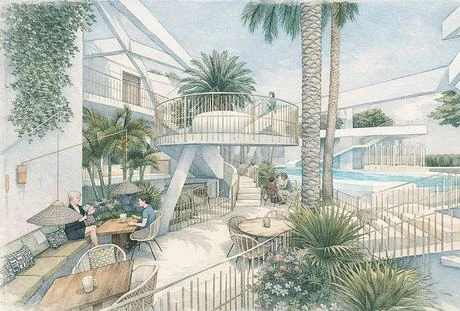
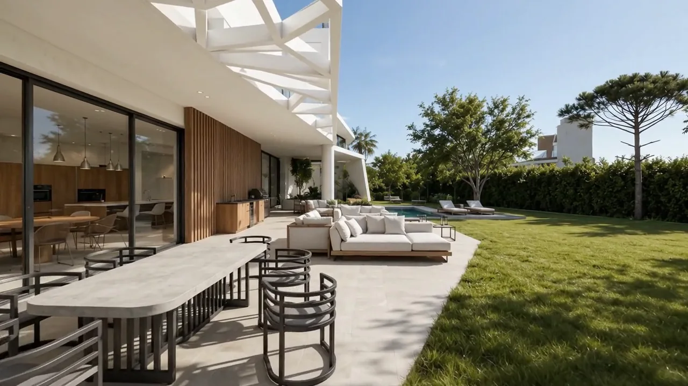

Design Houses S.L. · Residencial y hotelero premium
Hotel boutique y villas de alta gama
La forma más expresiva solo se sostiene cuando nace de la geografía del lugar.

UbicaciónMenorca · Donostia · Madrid
Año2021 – 2022
ProgramaHotel boutique, 11 viviendas adosadas y 3 villas
RolArquitecto · Design Houses S.L., Donostia
El proyecto
Tres operaciones de arquitectura de alta gama, implantadas en enclaves exclusivos y orientadas al mercado premium: Santandría Bai, hotel boutique en Cala Santandría (Menorca); Agerre Botanik, 11 viviendas adosadas con jardines privados y zona común con piscina, en una parcela de ~9.000 m² en Miramón–Zorroaga (Donostia); y Somosaguas Natura, tres villas de lenguaje deconstructivista en Madrid.
Experiencia
- Colaboración en diseño y desarrollo de proyectos residenciales y hoteleros de promoción privada.
- Documentación y desarrollo de proyecto.
- Visualización orientada a cliente y mercado premium.
AutoCADSketchUpLumionPhotoshop
Ver los recorridos en vídeo 3 vídeos
Hotel boutique · Santandría Bai


DibujoVisualizaciónVillas · Somosaguas Natura
